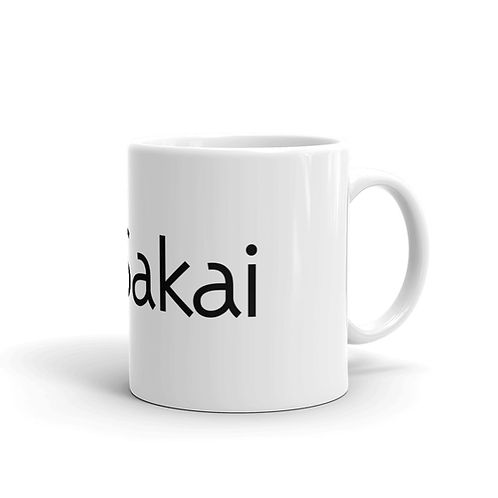
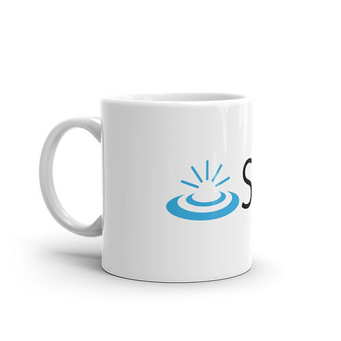
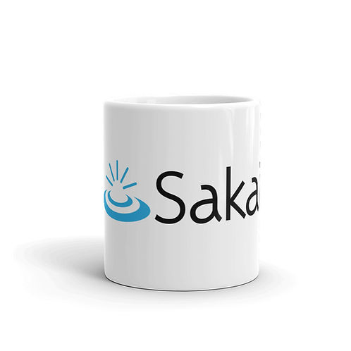
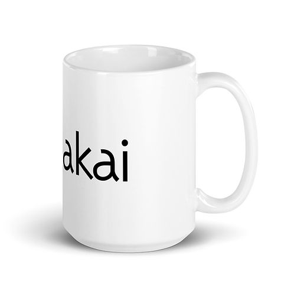
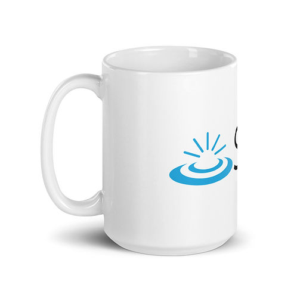
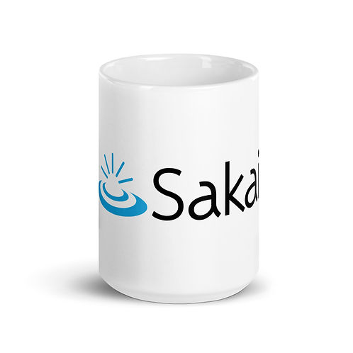

Home / Sakai White glossy mug






Whether you're drinking your morning coffee, evening tea, or something in between—this mug's for you! It's sturdy and glossy with a vivid print that'll withstand the microwave and dishwasher.
• Ceramic
• 11 oz mug dimensions: 3.85″ (9.8 cm) in height, 3.35″ (8.5 cm) in diameter
• 15 oz mug dimensions: 4.7″ (12 cm) in height, 3.35″ (8.5 cm) in diameter
• Dishwasher and microwave safe
• Blank product sourced from China
Sakai White glossy mug
$12.50Price
Size*
Quantity*
Add to Cart